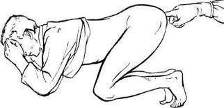
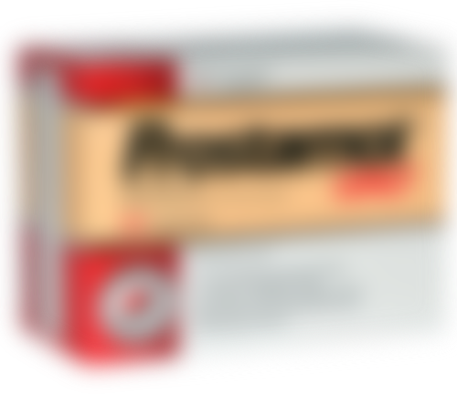

В САЩ и в други държави всички мъже се сблъскват с лечението на простатит през 2-3 седмици, веднъж в живота или за цял живот.
Междувременно в България, алчните лекари, ръка за ръка с аптеките, крият ефективните средства за лечение и взимат парите на мъжете година след година.
Простатитът е най-честото заболяване при мъжете над 40 години, въпреки че лекарите отбелязват с тревога неприятната тенденция болестта да се "подмладява". Мъжете, които се „запознават“ с тези проблеми, са все по-често на 30, 25 или дори 20 години.
Увеличаването на броя на пациентите се обяснява от лекарите със следното – всеки мъж, който:
- води заседнал начин на живот,
- води нередовен полов живот,
- има лоши навици,
- е страдал от инфекциозни болести,
- има наследствена предразположеност,
- страда от стрес, болести или високо кръвно налягане,
почти със сигурност ще страда от проблеми с простатата. Колко повече условия от гореописаните са изпълнени, толкова по-скоро. Някои на 25 години, други 45 – въпрос на време.
Симптомите на простатита са, вижте сами:
През 2017 г. уролози публикуваха страховита статистика: повече от 55 % от мъжете над 40-годишна възраст са изправени пред някаква форма на проблеми с простатата. Диагностицирането на простатита вече е доста лесно и не изисква медицински изследвания, повечето от симптомите са специфични:
- Продължителна или силна болка
- в долната част на корема, в скротума,
- перинеума или пениса
-
Урината помътнява
- Често уриниране, парене в уретрата,
- Усещането за "непълно изпразване на пикочния мехур"
- Затруднено уриниране (слаба струя)
-
Смущения в сексуалната функция
- Спад на либидото
- Намаляване на продължителността и качеството на ерекцията
-
Проблеми с еякулацията:
- преждевременна еякулация или проблеми при еякулация,
- слаба еякулация.
- Повишена умора и раздразнителност на организма
Дори въпреки очевидния спад в качеството на живот много мъже живеят с простатита с години, без да подозират необратимите последствия, до които тези повече или по-малко неприятни усещания могат да доведат.
Здрава простатна жлеза
Аденом на простатата
Нелекуван, простатитът винаги води до простатна
аденома ("края на
мъжествеността").
Разбираемо е, особено като се замислим за нашата система на здравеопазване. В повечето случаи, след диагнозата простатит консултацията се превръща в истинско мъчение. Лекарите премахват най-острите симптоми с помощта на "средства, препоръчани от фармацевтите", но независимо рецидивът на болестта е много често срещан.
Как се лекува простатита у нас (и как не трябва да се лекува)
За съжаление, в нашата страна с увредена здравна система (на едно от последните места в Европа!), няма как да се излекувате от простатита, дори и при упорити опити.
Стандартна процедура за лечение на възпаление на простата в България.
-
Като мъж отивате в клиника.
Частна или държавна, няма значение, защото в крайна сметка ще се наложи да платите.
Освен това, там има безкрайни опашки. - Лекарят ви преглежда, след което ви назначава кръвни изследвания. Някои от тях дори излишни. Те се извършват само с цел да се открият други заболявания. Плюс те са скъпи.
- След прегледа, лекарят поставя диагноза "простатит" и предписва "препоръчваните лекарства". Предписаните лекарства се използват за облекчаване на острите симптоми на болестта, но те не лекуват хроничното възпаление на простатата. А урологът несъмнено препоръчва лекарствата на компаниите, които му носят най-много пари. Лекарствата са добре познати на всички.
-
В допълнение към "препоръчителните" лекарства за облекчаване на симптомите, лекарите
винаги предписват
масаж на простатата или ректума, или лечение със специално устройство с подобно
действие. Това е много
унизително и неприятно изживяване - масажът се прави с пръст през ануса. Средно
масажът продължава
10-14 сесии. За всяка сесия разбира се, трябва да си платите. На запад такива масажи
не се правят вече
повече от 20 години, тъй като съвременните лекарства успяват да излекуват простатита
без да се налага
масаж!

- Освен това, в допълнение към основното лечение, лекарите често предписват лекарства за подобряване на сексуалната функция, качеството на спермата, за общо подобряване на състоянието на организма и др.
Следователно ако живеете в България и се разболеете от простатит, вероятно ще харчите по 1000-2000 лв. годишно заради алчни доктори и фармацевти! Уролозите препоръчват терапевтичен курс на базата на финансовите възможности на пациента, на първо място . След като "препоръчителните лекарства" не могат да ви помогнат повече, чисто просто премахват простатата. Така е построен уро-фармакологичния бизнес у нас.
Ето как се лекува простатит в САЩ и страните от западна Европа (и как ТРЯБВА да се лекува)
В САЩ, за да се излекувате от простатит, дори не се налага да ходите на лекар. Когато се появяват първите симптоми, е достатъчно да отидете в аптеката и да си купите продукт, доказан с десетилетия проучвания - добавка на базата на екстракт от плода на малко палмово дърво (Сау Палмето), която има ефективност до 98% , както е доказано още в 80-те.
Разбира се, след многобройни проверки за безопасността на метода, добавката се превръща в златен стандарт за лечение на простатит за всички в САЩ и западна Европа. Логично, това лекарство не е много полезно за мафията на фармацевтите - много по-изгодно е, ако хората да купуват едни и същите лекарства години наред само и само да облекчат болката, вместо лекарство, което напълно излекува болестта, евтино и достъпно за всички.
За разлика от нас, държави като САЩ, Франция, Германия и другите развити страни имат много добре структурирани здравни осигуровки и застраховки. Застрахователите не искат всеки да ходи на лекар постоянно, защото това са разходи, за които те плащат, а пък таксите са доста солени. Напротив, те са загрижени лечението да бъде възможно най-ефективно и колкото може по-бързо. Веднъж и завинаги!
В други страни притесненията на застрахователните компании надвиват мафията на фармацевтите, а това за обикновения човек означава, че има достъп до лек за възпалението на простатата жлеза.
Може ли положението в България да се подобри?
За съжаление, няма положителни промени сред аптеките и лекарите в страната, тъй като фармацевтичният бизнес работи с милиарди. Вие вероятно сте запознати с това.
Вероятно сте чели в интернет, в специални уебсайтове. Неотдавна едно от най-ефективните лекарства – , пристигна и в България. Скоро след като започна да се продава и у нас, то спечели доверието на хората.
По-натам ще разгледаме какви са разликите между и най-популярното средство за лечение на простатит в страната, препоръчвано от аптеките.
|
|

Друго |
|
|---|---|---|
| Форма: | капсули | капки |
| Действие: | Излекува простатита напълно, включително хроничен. Веднъж и завинаги. Само с един курс на лечение. | Облекчава само острите симптоми на простатит - болката и проблеми при уриниране. |
| Допълнително действие: |
• Подобрява либидото
• Предотвратява преждевременната еякулация • Подобрява потентността • Нормализира функционирането на пикочния мехур • Подобрява състоянието на ставите |
• Прави изпражненията по-меки, подобрява чревната перисталтика |
| Неблагоприятни ефекти, вреда за организма > | Няма. Изцяло натурален състав. |
• При редовна употреба може да доведе до доброкачествени изменения на
простатата
• Намалява потентността • Причинява чревни проблеми • Потиска имунитета, води до алергии • Причинява остра болка в стомаха |
| Принцип на действие | Има комплексно действие върху простатата със своите 5 естествени, внимателно подбрани компонента. Гарантиран противовъзпалителен и тонизиращ ефект. Премахва патогенната флора от простатата, подобрява структурата и функциите на простатата. Препоръчително е при хроничен, застоен и бактериален простатит. | Временно облекчава болката в простатата, прикрива развитието на болестта. Но в края на курса на прием, болестта отново се обостря. |
| Състав | Напълно естествени компоненти, извлечени от растения и витамини. | Единственият естествен компонент е смлян плод от палмово дърво (дори не е екстракт!). Останалите са просто химикали - титанов диоксид, оцветител – железен оксид, червен оцветител от кохинеал (E124) и др. |
може да се поръча от официалния уебсайт
Вече се разгръща мащабна кампания срещу това лекарство, инициирана от най-големите фармацевтични мрежи в страната. Твърде вероятно е лекарството скоро изчезва от пазара. Препоръчваме на всеки човек да си купи , докато все още е на разположение. Точно сега се продава с отстъпка
Коментари
Бранимир Д.
Много интересна статия, благодаря! У нас корупцията в здравето е на много високо ниво, слава богу, че имаме интернет на разположение. Поръчах и ще започна лечението.
Дани П.
Напълно потвърждавам! Купих си от Германия, когато ходих на гости при роднините ми миналото лято. Преди това, страдах от хроничен простатит над 10 години. Опитах се да се лекувам, но, както пише в статията, лечението имаше само временен ефект. След аз използвах , възпалението изчезна напълно. Повече от половин година вече нямам никакви симптоми. Преди само можех да мечтая за такъв резултат. Препоръчвам на всички мъже. Ще ви помогне!
Иван Стоев
Поръчах си. Изненадах се приятно. Благодаря!
Матей Терзиев
И аз се излекувах с този продукт. Купих си го от този уебсайт, само че не беше с отстъпка. Но не съжалявам изобщо, най-важното е, че е ефективен и успях да излекувам простатата без никакъв масаж, само за 2 седмици.
Иван Теодосиев
Поръчах си.
Христо Евстатиев
Гледах по телевизията предаване за фармацевтичния бизнес в България. Беше журналистическо изследване. Те говориха за този продукт също. Казаха, че все още се продава, но може да изчезне скоро. Затова да поръчваме, докато още може.
Димитър
Имам хроничен простатит, откакто бях на 28. Сега съм на 41. В този период се лекувах два пъти, когато имах кризи. Последният път, лекарите едва успяха да се справят. Казаха, че съм много близо до рак на простатата. Затова искам да кажа на всички, които имат простатит, да се лекуват колко може по бързо. Това е много опасна болест!
Елена Ракова
Искам да поръчам за приятеля ми. Благодаря!
Лили
Аз също поръчах. Невероятно намаление!! Благодаря!
Макс
е най-доброто лекарство от всички! Съгласен съм с автора на статията и всички, които го похвалиха. Използвах го преди 3 месеца. Всички проблеми изчезнаха напълно! Преди да се лекувам, страдах от няколко години, вече бях забравил какво е ерекция. Но сега всичко се нормализира.
Атанас Гладнишки
100% Супер продукт.
Милен Кр.
Четох още за на сайта им. Впечатляващо! Поръчах си. Обещаха, че до 5 дена ще пристигне в пощата. Много удобно!
Петър
Момчета, това е просто невероятно! Купих го, хареса ми! Сега вече нямам никакви симптоми на възпалението. Болките и проблемите при уриниране изчезнаха напълно. Освен това качеството и продължителността на секса се подобриха значително. Чувствам се идеално! Качеството на продукта определено ми направи впечатление.
Стефан
Благодаря!